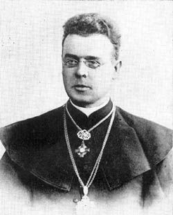
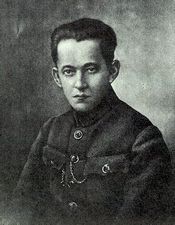

Kristijonas Donelaitis (1714-1780 m.)
Aš daug valandų praleidţiu savo sode skiepydamas,
akiuodamas, sodindamas ir t. t. ir mąstau:
reikia palikti ką nors ainiams
Mano įpėdini! Tegul tavo sūnūs, jeigu jų turėsi ir
norėsi paskirti teologijai, laiku gerai išmoksta
lietuviškai, kad galėtų tinkamai vadovauti parapijai
lietuvių kalba.
Man yra įsakyta garbinti šv. Aleksandrą. Gal jis
ir buvo geras žmogus, bet aš apie jį nieko nežinau,
lygiai kaip nežinote ir jūs. Todėl, mielieji broliai,
pasiskaitykite šiandien šią Šv. Rašto vietą:
„Aleksandras kalvis man yra bloga padaręs, tegul Viešpats
atlygina jam pagal jo darbus!
Maironis (1862-1932 m.)
Kur lygūs laukai, snaudžia tamsūs miškai, lietuviai
barzdočiai dūmoja.
Gyvenimas mūsų kaip gėlė laukinė, čia žydi,
žaliuoja, čia dalgis nuskynė.
Sunku mums būtų be vilties! Be jos skausme
kas nuramintų, kas širdžiai duotų tiek ugnies?
Kas ištvermę varge gamintų?
Vincas Krėvė (1882-1954 m.)
Laimė priklauso tam, kuris drąsiai jos siekia,
kur ir kaip galėdamas.
Kryžiuotis tik girtas tiesą sako: blaivas
jis visuomet suktai kalba.
Tau nėra kito išėjimo, jei turi drąsos
gyventi, kaip nori.